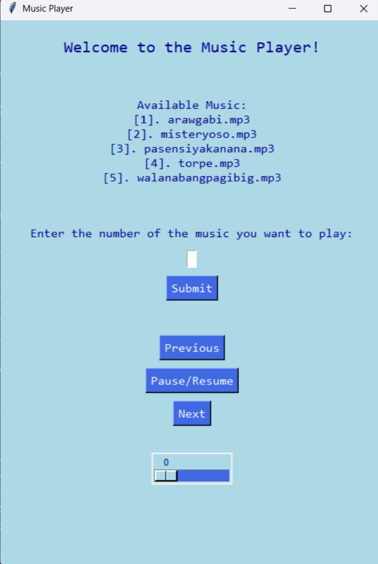
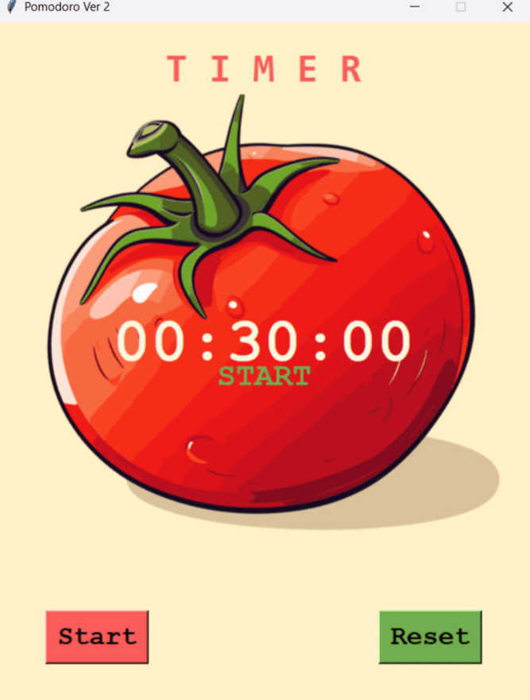
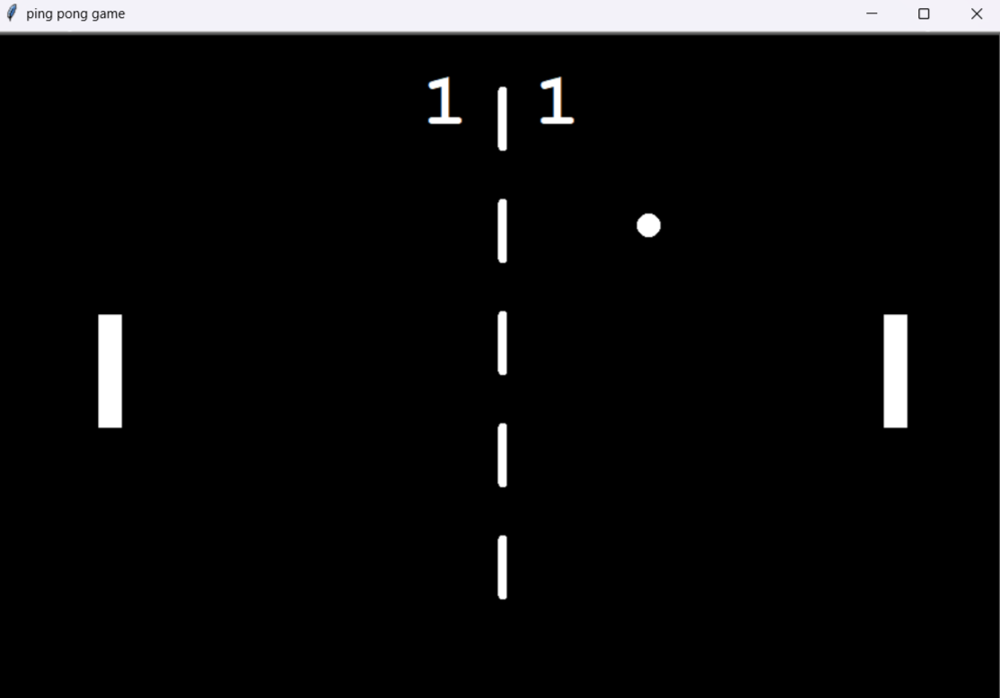
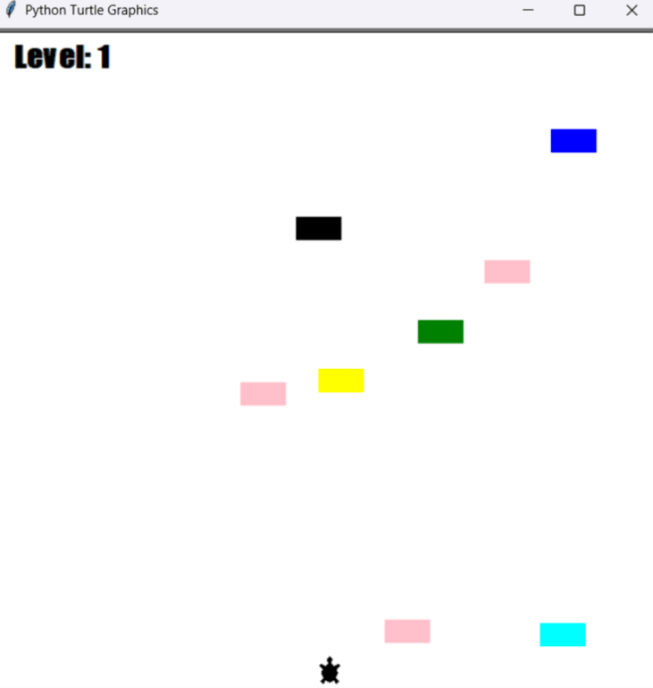
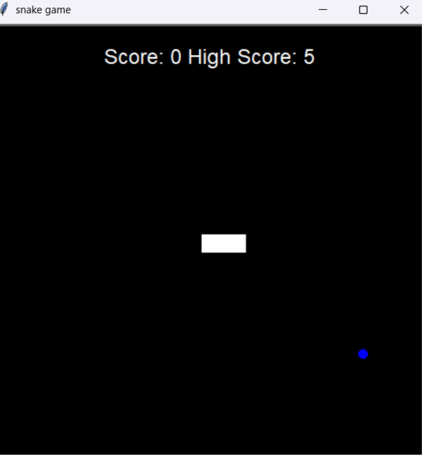

Sample Projects

Music Player
Language: Python
Modules & Tools: Tkinter, Pygame
This GUI version of the program is a simple music player built with Tkinter and Pygame, which displays a list of available songs from a `music` folder and lets the user select one by number. It provides buttons to play, pause/resume, go to the next or previous track, and includes a volume slider for adjusting playback. The interface is styled with labels and feedback messages, making it easy to interact with and control music directly from the window.
Pomodoro
Language: Python
Modules & Tools: Tkinter
This Pomodoro program is a timer application that helps manage productivity by alternating between work and break sessions. It lets you work for 30 minutes, then take a 5 minute short break, and after three completed work sessions it provides a longer break period to rest. The program displays the countdown clearly, indicates whether you are in work mode or break mode, and automatically switches between these states.


PingPong
Language: Python
Modules & Tools: Turtle
This ping pong game program uses Python’s turtle graphics to create a simple two‑player Pong clone. It sets up a black game window with paddles on the left and right, a ball that moves across the screen, and a dashed line drawn down the center. Players control the paddles with the W and S keys for the left side and the Up and Down arrow keys for the right side. The ball bounces off the top and bottom walls and reverses direction when hitting a paddle. If a paddle misses, the opposing player scores a point, which is tracked by the scoreboard. The game runs continuously until the window is closed, providing a basic but functional ping pong experience.
Crossy Road Game
Language: Python
Modules & Tools: Turtle
This turtle crossy road game is a simple arcade‑style program where the player controls a turtle character trying to cross the screen safely. The player moves up, down, left, or right using the arrow keys, while cars are continuously created and move across the screen. Each time the player reaches the finish line, the level increases, the player is reset to the starting position, and the game speed becomes faster, making it more challenging. If the turtle collides with a car, the game ends and a game over message is displayed.


Snake Game
Language: Python
Modules & Tools: Turtle
This snake game program uses Python’s turtle graphics to recreate the classic arcade experience. The player controls a snake that moves around the screen, eating food to grow longer and increase the score. The game checks for collisions with the walls and with the snake’s own tail, which trigger a game over sequence. When the game ends, it plays a sound and opens a separate window displaying a meme image. The scoreboard tracks the current score and updates the high score when the snake crashes, making the game both fun and challenging.